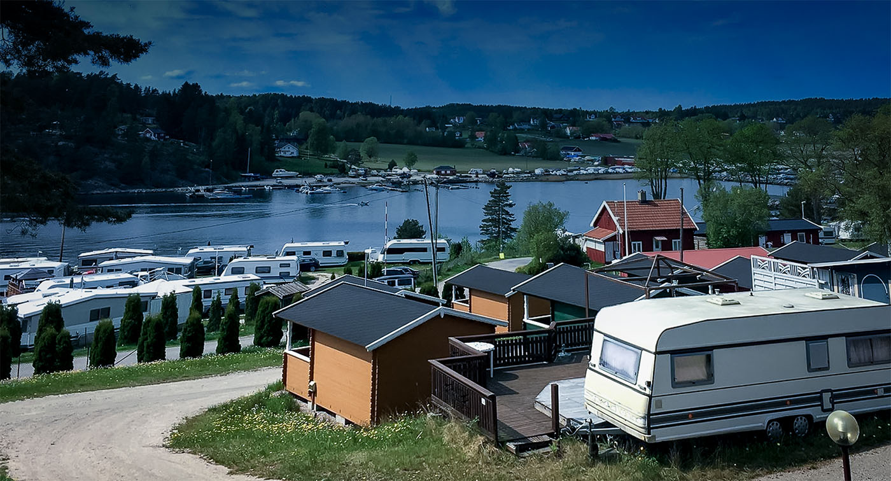
Familiecamping
ved Skjebergkilen
Campingplasser, hytter og leilighet idyllisk til innerst i kilen, en kort kjøretur fra Fredrikstad, Sarpsborg, Halden og Sverige.
Midt i Østfolds beste sommer
Skjeberg Camping ligger skjermet og idyllisk til innerst i Skjebergkilen, med kort vei til Fredrikstad, Sarpsborg, Halden og grensa mot Sverige. Sarpsborg er byen i Norge med flest soldager i året, og herfra tar det bare 15 minutter til Nordby Shoppingsenter og 30 minutter til Strömstad, hvor ferjene går videre til Kosterøyene.
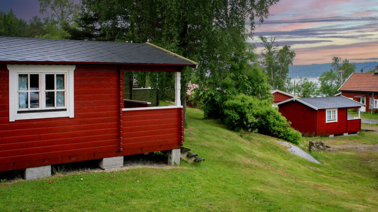
Fra teltplass til vinterhytte
Over 180 campingplasser fordelt på to områder, pluss hytter for både sommer og helårsbruk.
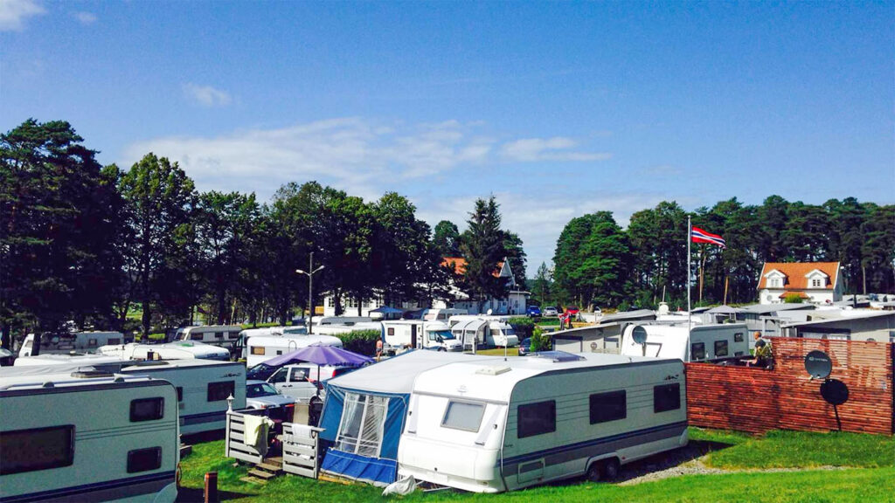
Campingplasser
15 døgnplasser for campingvogn, camper eller bobil, samt 3–5 teltplasser. I tillegg har vi over 100 faste plasser på Høysand og 80 på Revebukta.
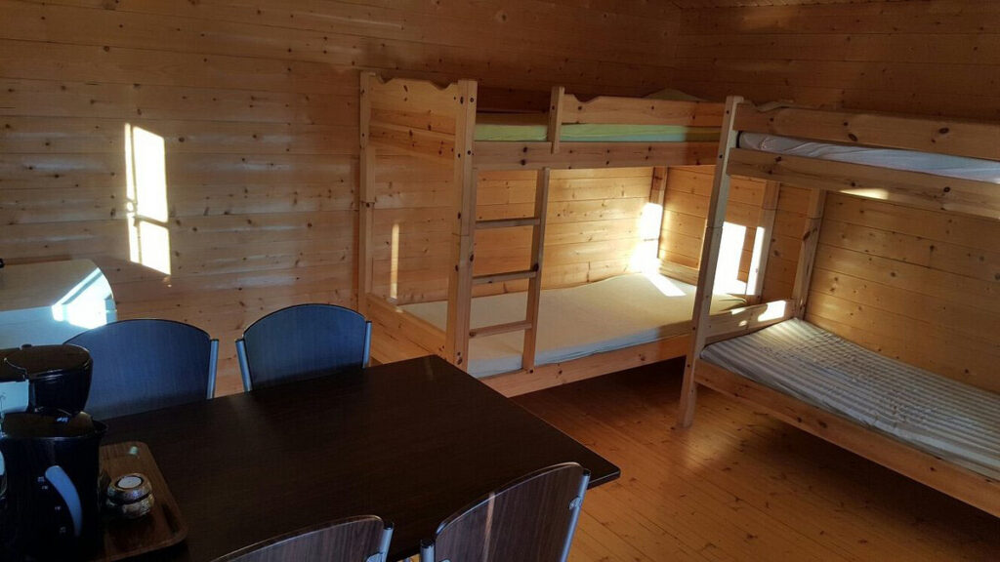
Sommerhytter
23 enkle, velutstyrte sommerhytter med plass til 4–6 personer, midt i det gode campinglivet.
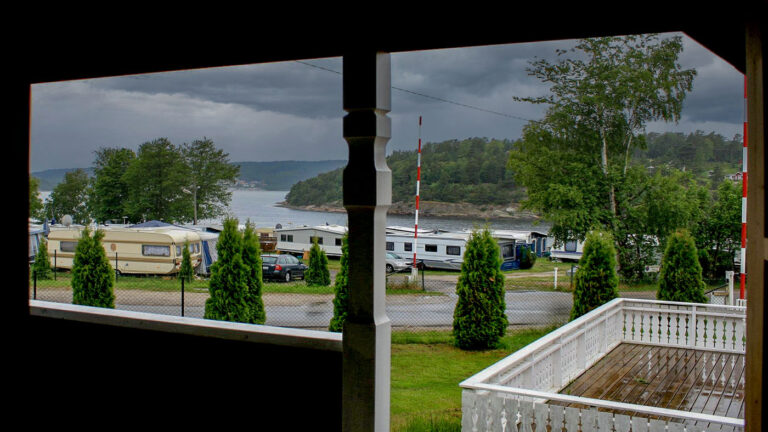
Vinterhytter, hus og leilighet
Vinterhytter med bad og kjøkken for helårsbruk, i tillegg til 1 koselig hus og 1 leilighet.
Firma, folk i oppdrag eller behov for lengre leieperiode? Vi har gode rabatter, ta kontakt for et tilbud.
Alltid noe å finne på
Et flott minigolfanlegg ligger like ved, og på varme dager er det kort vei til noen av de fineste sandstrendene Østfold har å by på. Den store gressplenen gir plass til lek og spill, som en runde strandvolleyball før kvelden.
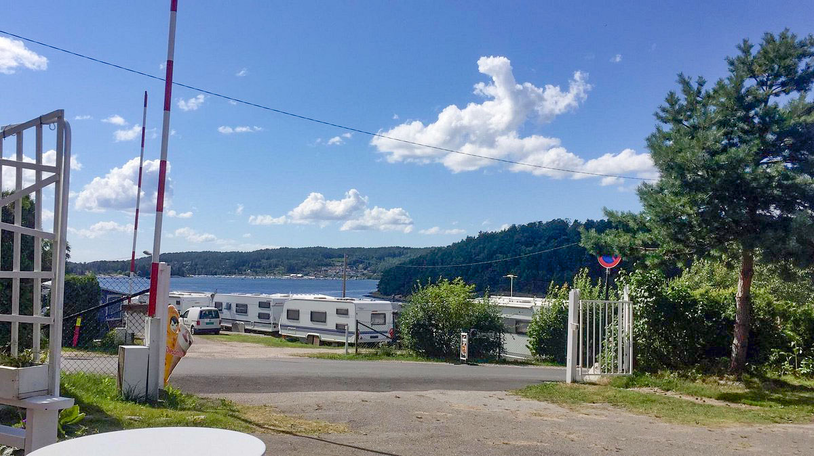
Restaurant Salt, rett ved siden av
Nordisk kjøkken med inspirasjon fra Sør-Europa, og en av de vakreste utsiktene over Skjebergkilen. Menyen følger sesongen, og setter det beste av lokale råvarer i sentrum.
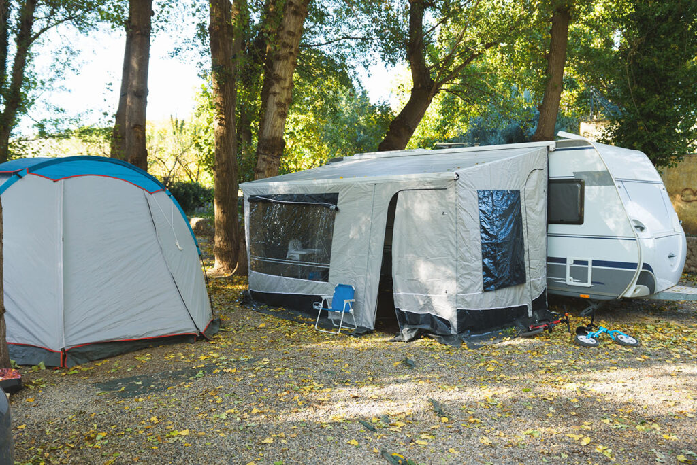
Mer å oppleve rundt kilen
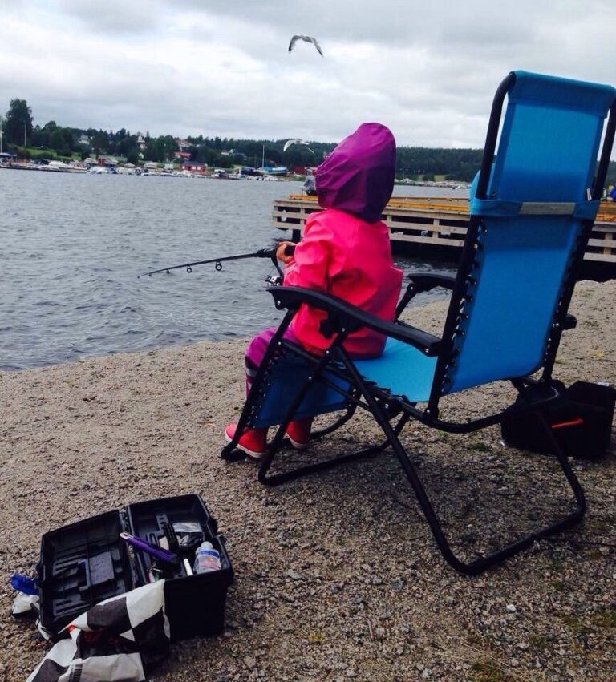
Saltvannsfiske
Fangst av flere ulike fiskearter, helt i nærområdet.
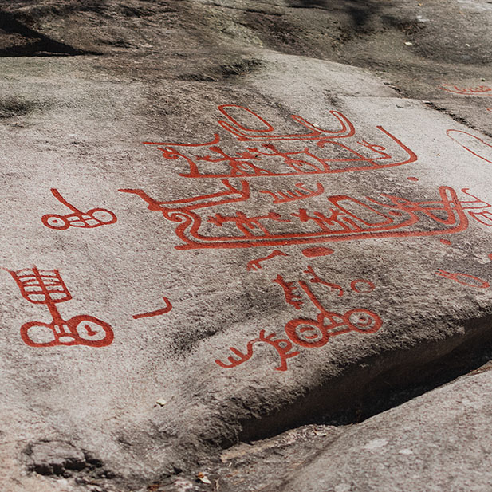
Oldtidsveien
Helleristninger og utsiktstårnet på Solberg, kort tur unna.
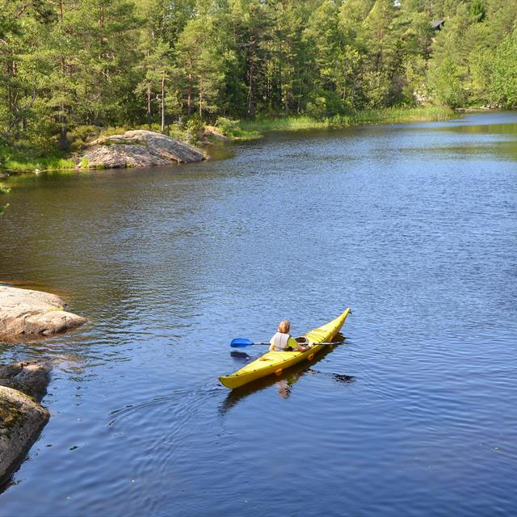
Børtevann kano
Ro deg utover på rolig vann i vakre omgivelser.
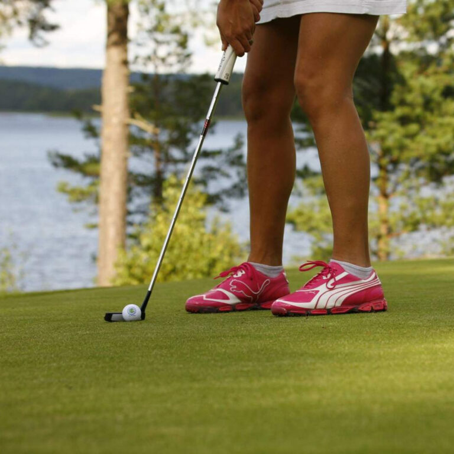
Skjeberg golfklubb
15 minutters kjøring fra campingplassen.
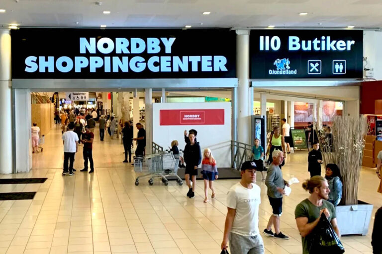
Nordby Shoppingsenter
15 minutter unna, rett over grensen.
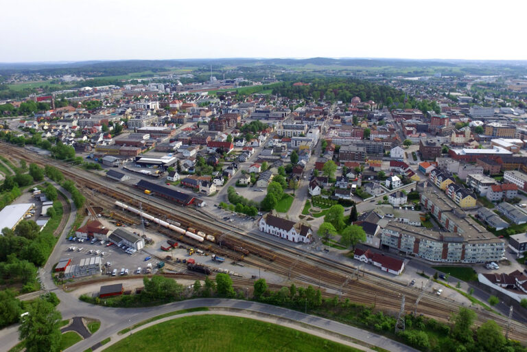
Sarpsborg
Byen med flest soldager i Norge, og Borgarsyssel museum.
I tillegg: klatring hos Climbing on the Border (13 min), Skjeberg minigolf som nabo, og ferje fra Strömstad til Kosterøyene.
Ta kontakt med oss
Har du spørsmål om ledige plasser, hytter eller fast leie? Send oss en melding, så svarer vi så raskt vi kan.
- Adresse Nancy Johannessens vei 5, 1747 Skjeberg
- E-post info@skjebergcamping.no
- Sesong 1. mai – 30. september